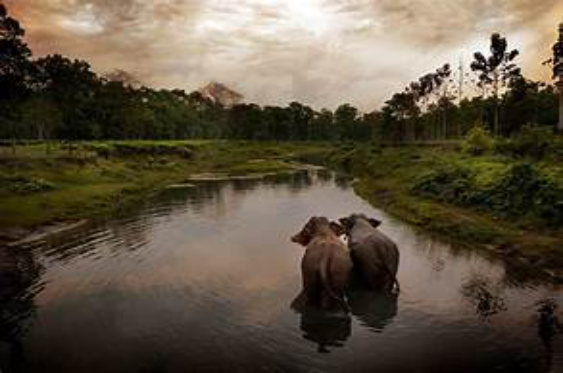
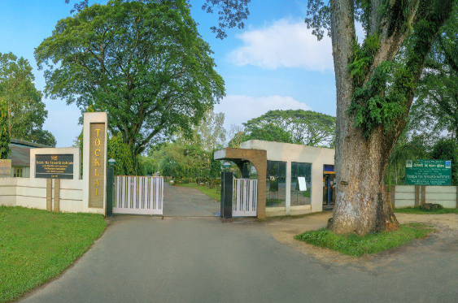
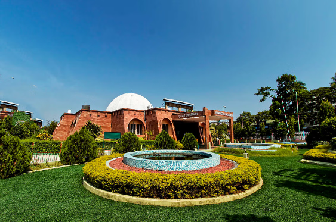

Manas national park

Manas National Park is a national park, Project Tiger reserve, and an elephant reserve in Assam, India. Located in the Himalayan foothills, it borders the Royal Manas National Park in Bhutan.Best time to visit is november to april.Visitors to Manas National Park can embark on thrilling wildlife safaris to explore its dense forests, grasslands, and riverine habitats. The park offers opportunities for wildlife enthusiasts and nature lovers to spot various species of mammals, birds, and reptiles in their natural habitat.
Apart from wildlife safaris, visitors can engage in activities like birdwatching, nature walks, and cultural experiences with local communities. The park also promotes ecotourism initiatives aimed at conservation efforts and sustainable development, offering visitors a chance to contribute to preserving this precious ecosystem.
The best time to visit Manas National Park is during the winter months from November to April when the weather is pleasant, and wildlife sightings are more frequent. However, the park remains closed during the monsoon season from June to September due to heavy rainfall and flooding.
Toclai tea research centre

Tocklai Tea Research Centre is an amazing place to visit as it's the oldest and one of the largest tea centres in the whole world. Here you can learn about several different ways of growing and making tea through your eyes practically. Nobody should miss the chance and explore this place once in their lifetime.It is the world's largest and oldest tea research centre (founded in 1911). The labs here research, among other things, microorganisms that inhibit plant disease and promote growth.The Tocklai Tea Research Institute (formerly Tocklai Experimental Station) of Tea Research Association (TRA) is an Indian prime tea research institute for the development of tea and its agricultural practices located in Jorhat, Assam, India. Founded in 1911, it is the world's largest and oldest tea research institute.[1]
Tocklai Tea Research Institute carried out research on all aspects of tea cultivation and processing for improving overall productivity and quality. After the formation of Tea Research Association in 1964 with the centre at Tocklai, has also further expanded the horizon of tea research. Its regional R&D centre is at Nagrakata, West Bengal
Guwahati planetarium

It is an astronomical institute and planetarium that serves as a huge crowd puller in the city. It is the best place in the city for the space enthusiasts that love exploring the celestial bodies.it remains closed on the 1st and 15 th of every month for maintainence purposes.The Guwahati Planetarium is an attempt to reach the young and scientifically inclined minds and provide them a glimpse of the wonders of the night sky and solar system.
The Guwahati Planetarium, also referred to as the Assam State Planetarium, is a prominent scientific education hub located in the heart of Guwahati, Assam, near the Uzan Bazar area. Equipped with a state-of-the-art domed theater featuring advanced projection systems, it offers immersive shows on astronomy, cosmology, and space exploration. Complementing these captivating presentations are educational exhibits focused on various aspects of astronomy and space science. Since its inauguration in 1994 by the Government of Assam, the planetarium has been dedicated to promoting scientific literacy and curiosity among the public, with a particular emphasis on students. Through a range of educational programs, workshops, and lectures, it serves as a catalyst for learning and exploration, engaging visitors of all ages in the wonders of the universe. Additionally, the planetarium hosts public engagement activities such as telescope viewing sessions and special events during celestial phenomena like eclipses and meteor showers, further enriching the science education experience. As a cherished institution in Assam's scientific landscape, the Guwahati Planetarium continues to inspire and educate generations about the marvels of the cosmos.